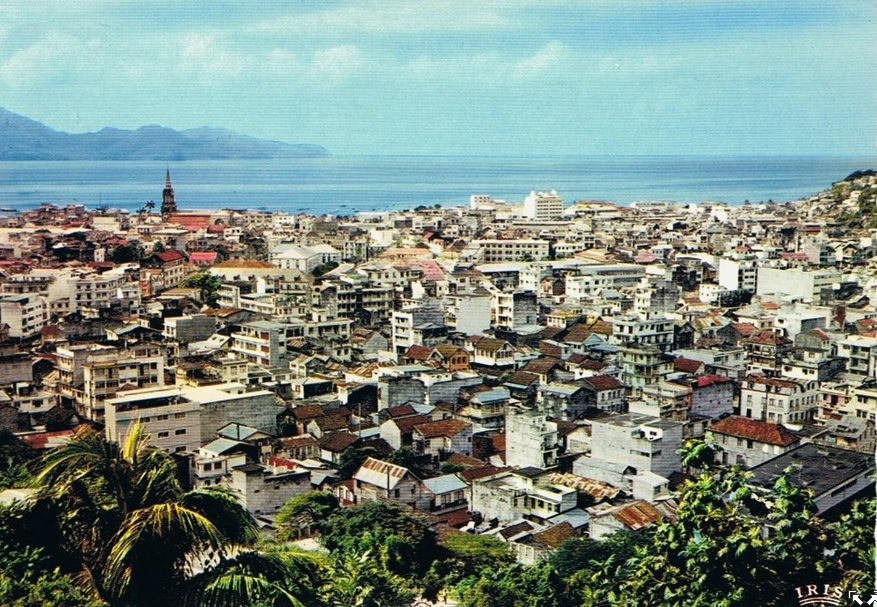
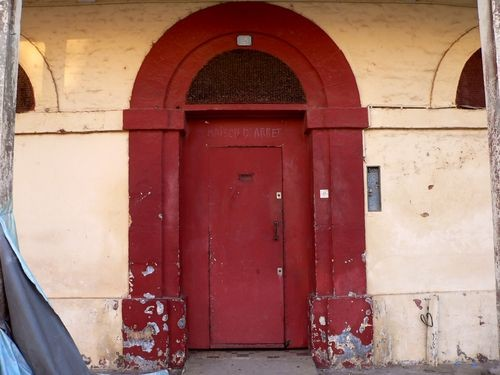
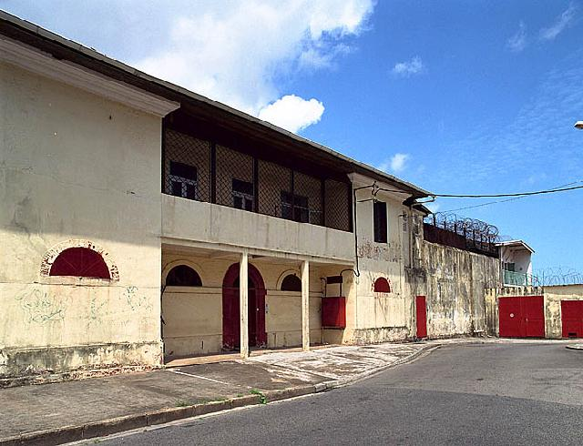
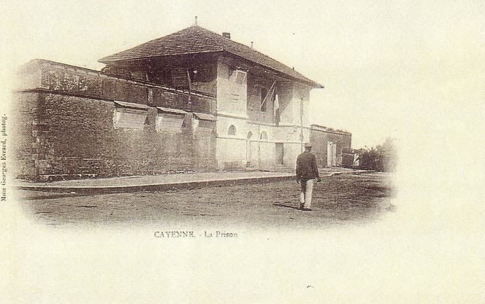
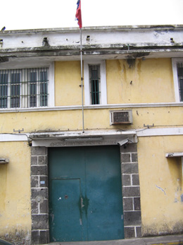
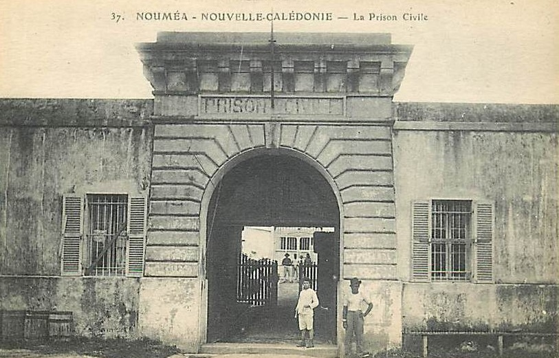
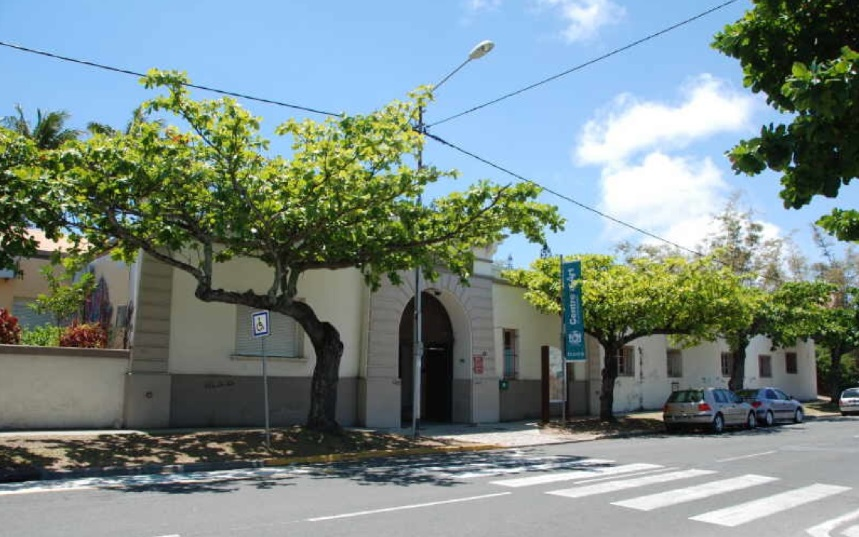

| Département | Images | Ville | Nom | Adresse | Période | Capacité | Histoire du lieu | Nombre d'exécutions |
| Guadeloupe (971) | Basse-Terre | Maison d'arrêt, de justice et de correction | Boulevard Félix-Eboué | En service depuis 1791 | 130 places | |||
| Guadeloupe (971) | Pointe-à-Pitre | Maison d'arrêt, de justice et de correction | Rue Lethière | 1834-2003 | Plusieurs fois endommagée par des tremblements de terre. Démolie en 2010 pour y construire le nouveau palais de justice. | Au moins une exécution en 1947 | ||
| Martinique (972) |  |
Fort-de-France | Maison d'arrêt, de justice et de correction | 118, rue Victor-Sévère | -1996 | 231 places | Sur la photo, bâtiment au toit coloré (orangé?) en bas à droite du clocherDétenus transférés au centre pénitentiaire de Ducos. | Au moins deux exécutions en 1964 et 1965 |
| Martinique (972) | Saint-Pierre | Maison d'arrêt, de justice et de correction | Boulevard Laigret | 1840-1902 | Située sur l'ancienne caserne de gendarmerie. Détruite, comme l'ensemble de la cité, par l'éruption de la Montagne Pelée le 08 mai 1902. Seul un détenu survit à la nuée ardente, Louis-Auguste Cyparis, qui se trouvait dans un cachot à demi-enterré et sans fenêtre autre qu'une meurtrière qui tournait le dos au volcan ! | |||
| Guyane (973) |    |
Cayenne | Maison d'arrêt | Rue Arago | 1821-1998 | Les cinq dernières années, servait de lieu d'incarcération des détenus en attente de jugement uniquement | Cinq ou six exécutions | |
| La Réunion (974) |  |
Saint-Denis | Maison d'arrêt Juliette Dodu | Rue Juliette Dodu | 1718-2008 | 96 places | Pôle judiciaire - comportant les tribunaux et la maison de police - | Sept exécutions en 1940, 1941, 1941, 1948 et 1954. |
| La Réunion (974) | Saint-Pierre | Maison d'arrêt | -1930 | Trois exécutions en 1911 et 1924 | ||||
| La Réunion (974) | Saint-Pierre | Maison d'arrêt de la Cayenne | 1, rue de Cayenne | En service depuis 1930 | 88 places (2015) | Ancien siège de la compagnie des Indes, construit en 1863. | Aucune exécution | |
| Nouvelle-Calédonie |   |
Nouméa | Prison civile | 6, boulevard extérieur | 1881-1939 | 65 places | Sous le Second Empire, la maison d'arrêt civile se trouve dans l'hôpital militaire - actuel CHU Gaston Bourret. Sur les plans de l'Amiral Olry, dans le quartier du Faubourg Blanchot, sur un terrain en pente de 59 mètres sur 40.5 proche d'une caserne, la nouvelle prison fonctionne moins de soixante ans, avant d'être fermée et transférée au Camp-Est de l'ancien bagne, sur l'île Nou - où elle est toujours en activité. Jusqu'en 1992, on emploie les bâtiments comme entrepôts pour les services pharmaceutiques. Après avoir été inscrit à l'inventaire des monuments historiques en 1994 et accueilli un an, en 1995, l'école de musique pendant des travaux de rénovation, l'endroit est devenu le Centre d'art - Théâtre de poche. | Treize exécutions en 1905, 1906, 1909, 1920, 1923, 1931, 1933, 1934 et 1940. |
| Saint-Pierre-et-Miquelon (975) | Saint-Pierre | Maison d'arrêt | Rue Carpillet (rue Emile-Sasco) |
{kind=link}
{kind=link}
{kind=link}
{kind=link}
{kind=link}
{kind=link}
{kind=link}